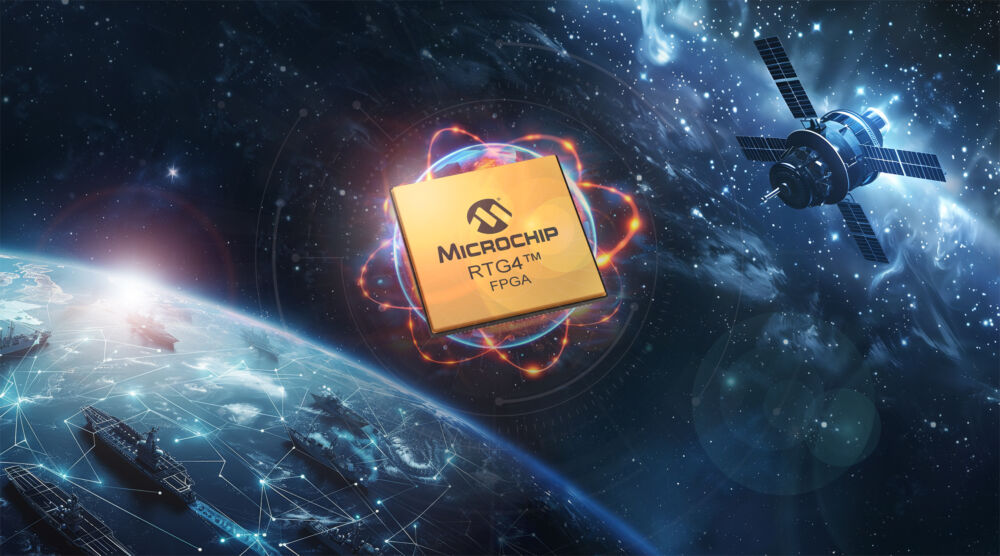
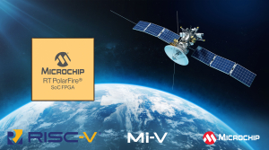

Microchip Technology (MCHP)
W kontekscie: Promieniowanie i elektronika rad-hard vs COTS
Microchip to zdywersyfikowany dostawca embedded control - mikrokontrolerów mixed-signal, układów analogowych, FPGA, pamięci i łączności. Z perspektywy orbitalnych centrów danych kluczowa jest jego nabyta wraz z Microsemi część "space-grade", bo to właśnie tam spółka oferuje krzem, który przetrwa w środowisku radiacyjnym. Co realnie grozi elektronice na orbicie i dlaczego "zwykły" krzem tam zawodzi, rozwija wątek Środowisko radiacyjne: czym właściwie grozi orbita.
Sercem oferty są radiacyjnie odporne układy FPGA. Flagowy RTG4 to flash-based FPGA o pojemności do 151 824 rejestrów, w klasie QML Class V i z odpornością TID powyżej 100 krad (🔵 strona produktowa Microchip RTG4). Architektura flash daje przewagę, którą trudno przecenić: zero configuration upsets w promieniowaniu, brak potrzeby scrubbingu i TMR na samą konfigurację oraz niższy pobór mocy niż w odpowiednikach opartych na SRAM. Uzupełnia go rodzina RT PolarFire / PolarFire SoC (RISC-V + FPGA, QML Class Q). Mechanizm "zatrzaśnięcia" błędów konfiguracji i kompromis COTS kontra rad-hard, na którym ta architektura wygrywa, opisuje COTS kontra rad-hard: koszty, opóźnienie generacyjne, wydajność.
Portfolio nie kończy się na FPGA. Microchip (przez Microsemi/Atmel) dostarcza też rad-hard i rad-tolerant mikrokontrolery oraz procesory - SAMRH71 (Arm Cortex-M7, rad-hard by design), SAMV71Q21RT, SAM3X8ERT czy ATmegaS128/ATmegaS64 - a także pamięci space-grade, jak SST38LF6401RT SuperFlash (64 Mbit, do 50 krad TID, 🔵 SatNews/Microchip). Charakterystyczne jest podejście skalowalne: od układów COTS, przez warianty sub-QML, aż po pełną kwalifikację QML. Przykładem jest MIC69303RT - pierwszy COTS rad-tolerant LDO Microchipa pod konstrukcje LEO - oraz VSC8574RT (Gigabit Ethernet PHY). Ta drabinka kwalifikacji skraca czas i koszt wejścia dla New Space, co bezpośrednio dotyka kalkulacji opisanej w Żywotność elektroniki vs dawka skumulowana i MTBF.
Przewaga Microchipa opiera się na ponad 60 latach space heritage i jednym z najszerszych portfolio rad-hard/RT na rynku. RTG4 był pierwszym RT FPGA z ponad 150 000 elementów logicznych w QML Class V (2018), a wersja lead-free flip-chip uzyskała QML-V w 2024. Stos certyfikacji obejmuje QML Class V, QML Class Q, MIL-PRF-38535, TID ponad 100 krad oraz odporność SEL przy LET powyżej 103 MeV·cm²/mg. Flight heritage - MEV-1/2, CAS-500, Artemis II i wiele programów USA oraz międzynarodowych - to bariera wejścia, którą widać w Heritage lotny: co już naprawdę poleciało: zakwalifikowanego, oblatanego dostawcy nie wymienia się łatwo.
Dla inwestora: rad-hard/space-grade to dla Microchipa nisza o wysokiej barierze i lepkim heritage, ale jej waga w całych przychodach jest marginalna (patrz Pozycja rynkowa). To linia wzmacniająca profil, nie napęd wyniku.
Materiały spółki
Grafiki z materiałów spółki / IR (prawa właściciela, użycie redakcyjne). Pełny rejestr:
Spolki/assets/_licencje.json.

1. RTG4 FPGA - zdjęcie produktowe / QML-V. Źródło: engineering-update.co.uk; licencja: materiały spółki / IR - prawa właściciela, użycie redakcyjne.
2. RTG4 - alternatywne zdjęcie produktowe. Źródło: admin.chipmall.com; licencja: materiały spółki / IR - prawa właściciela, użycie redakcyjne.

3. RT PolarFire SoC - produktowa grafika prasowa. Źródło: www.elektronikfokus.dk; licencja: materiały spółki / IR - prawa właściciela, użycie redakcyjne.
Pozycja rynkowa
W skali całej spółki Microchip jest dużym, zdywersyfikowanym producentem półprzewodników. W FY2026 (rok zakończony 31.03.2026) net sales wyniósł 4 713 mln USD, czyli +7,1% r/r po wcześniejszym spadku w FY2025 (🔵 8-K/earnings release Q4&FY2026). Sam Q4 FY2026 (kwartał do 31.03.2026) dał 1 311 mln USD przychodu (+35,1% r/r, +10,6% k/k). Strukturę przychodów zdominował segment Semiconductor Products - około 97% sprzedaży - przy Technology Licensing na poziomie około 3% (🔵 10-Q Q1 FY2026). W rozbiciu produktowym za Q1 FY2026 mixed-signal microcontrollers odpowiadały za 532,6 mln USD (49,5%), analog za 316,2 mln USD (29,4%), a kategoria Other obejmująca FPGA, pamięci i licencje za 226,7 mln USD (21,1%).
Na tym tle nisza kosmiczna jest niewielka. Udziału przychodów ze "space-grade rad-hard/COTS" spółka nie ujawnia - to NIE UJAWNIONE. Analitycy szacują cały end-market Aerospace & Defense na około 18% przychodów (🟠 Morgan Stanley, maj 2026), choć starsze dane regionalne wskazywały bliżej 9%. Sama nisza space-grade stanowi wewnątrz A&D mniejszość, więc w skali całego Microchipa pozostaje marginalna - i należy to powiedzieć wprost, bo dynamika wyniku spółki jest napędzana przez znacznie większe rynki MCU i analog, nie przez kosmos.
W samym podzespole rad-hard pozycja jest jednak mocna: Microchip należy do wiodących dostawców rad-hard/RT FPGA, MCU i pamięci do zastosowań kosmicznych, ze szczególną siłą we flash-based radiation-tolerant FPGA (RTG4) oraz w ofercie "COTS-to-space-qualified" dla LEO i małych satelitów.
Konkurencja układa się wzdłuż kilku osi:
- FPGA/SoC do przestrzeni kosmicznej: AMD/Xilinx (XQR Versal, Kintex UltraScale, Zynq MPSoC rad-tolerant), Lattice Semiconductor (CertusPro-NX, CrossLink-NX, MachXO). Tu Microchip różnicuje się architekturą flash (odporność konfiguracji), podczas gdy rywale stawiają często na wyższą wydajność SRAM-FPGA kosztem scrubbingu/TMR.
- Rad-hard MCU/procesory i pamięci: Infineon (Cypress), Honeywell Aerospace, BAE Systems, Renesas, STMicroelectronics, Teledyne e2v, 3D PLUS. BAE Systems i Frontgrade (dawniej Cobham) reprezentują "twardy" rad-hard by design pod programy obronne, gdzie heritage i kwalifikacja QML decydują o wyborze dostawcy.
Ryzyka
Cykliczność półprzewodników i korekta zapasów. Microchip jest częścią cyklu pamięciowo-MCU, a jego wrażliwość pokazał FY2025: przychód spadł o 42,3% (4,40 mld USD wobec 7,64 mld USD w FY2024) z powodu nadmiaru zapasów w dystrybucji i u klientów oraz spowolnienia gospodarczego (🟠 Microchip FY2025). Mechanizm dla niszy: choć A&D/space jest mniej cykliczna, korzysta z tych samych fabryk i łańcucha. Opóźnienia programów obronnych i kosmicznych oraz redukcja backlogu obniżają wykorzystanie fabryk i marże nawet wtedy, gdy popyt końcowy w kosmosie się utrzymuje.
Zależność od zewnętrznych foundry oraz geopolityka i kontrole eksportowe. W 1H FY2026 około 65% sprzedaży pochodziło z produktów wytwarzanych u zewnętrznych foundry, około 32% montażu i około 31% testów wykonywały podmioty zewnętrzne (🔵 10-K FY2026). Mechanizm: kontrole eksportowe surowców rzadkich ziem (Chiny), cła i ograniczenia dostępu do zaawansowanych procesów mogą podnieść koszty i wydłużyć lead-time właśnie dla niszowych, długo kwalifikowanych układów space-grade. To są elementy, których nie da się szybko przenieść do innego dostawcy bez ponownej, kosztownej kwalifikacji QML - więc szok podażowy uderza tu mocniej niż w masowym MCU.
Powiązane spółki
Inne notowane spółki z raportu dzielące z tą firmą co najmniej jeden wątek tematyczny (wspólny rynek, technologia lub łańcuch wartości).
- Advanced Micro Devices, Inc. (AMD) - Rad-tolerant FPGA/SoC (Versal/Xilinx) + GPU
Wspólne wątki: Promieniowanie i elektronika. - BAE Systems plc (BA) - Rad-hard procesory (RAD750/RAD5545); optyka (Ball)
Wspólne wątki: Promieniowanie i elektronika. - NVIDIA Corporation (NVDA) - Akceleratory GPU (COTS) - ładunek obliczeniowy on-orbit
Wspólne wątki: Promieniowanie i elektronika.
Zrodla
- 🔵 Microchip - 8-K / earnings release Q4 & FY2026 (przychody, segmenty): https://last10k.com/sec-filings/mchp
- 🔵 Microchip 10-Q Q1 FY2026 - Segment Information (struktura segmentów i linii produktowych): https://www.companiesmarketcap.com/aud/microchip-technology/sec-reports-10q/0000827054-25-000133/
- 🔵 Microchip RTG4 product page (RTG4, QML Class V, TID): https://www.microchip.com/en-us/products/fpgas-and-plds/radiation-tolerant-fpgas/rtg4-radiation-tolerant-fpgas
- 🔵 SatNews / Microchip - SST38LF6401RT SuperFlash: https://satnews.com/2020/12/15/microchip-fabs-a-new-radiation-tolerant-super-flash-memory-device-for-space-missions/
- 🟠 EENews Europe - MIC69303RT (COTS rad-tolerant LDO dla LEO): https://www.eenewseurope.com/en/microchip-launches-its-first-cots-rad-tolerant-power-management-chip-for-leo-designs/
- 🟠 Yahoo Finance / Morgan Stanley (udział A&D ~18%, maj 2026): https://finance.yahoo.com/markets/stocks/articles/morgan-stanley-raises-price-targets-214700120.html
- 🟠 Simply Wall St / Microchip FY2025 (spadek przychodu -42,3%): https://finance.yahoo.com/news/microchip-technology-full-2025-earnings-113830516.html
- 🔵 Microchip 10-K FY2026 (zależność od foundry, montaż/test): https://www.companiesmarketcap.com/inr/microchip-technology/sec-reports-10k/0000827054-26-000016/
- 🟠 Intelmarketresearch - Radiation Tolerant Memory (rynek pamięci RT, konkurenci): https://www.intelmarketresearch.com/radiation-tolerant-memory-market-25606
Linkują tutaj
5 powiązanych notatek
- Mapa raportu Orbitalne / kosmiczne centra danych
- Sekcja Promieniowanie i elektronika rad-hard vs COTS
- Spółka Advanced Micro Devices (AMD)
- Spółka BAE Systems (BA)
- Spółka NVIDIA (NVDA)